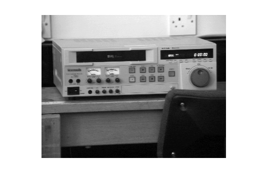
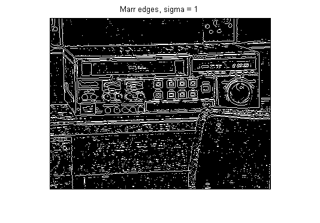
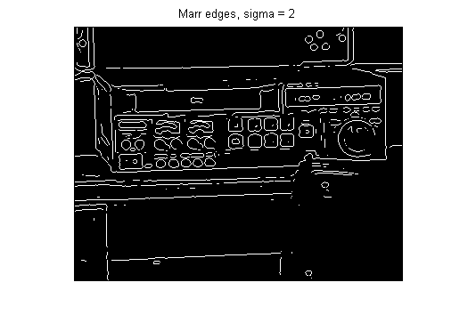
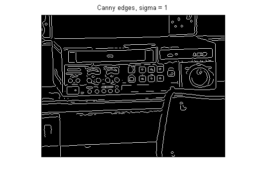
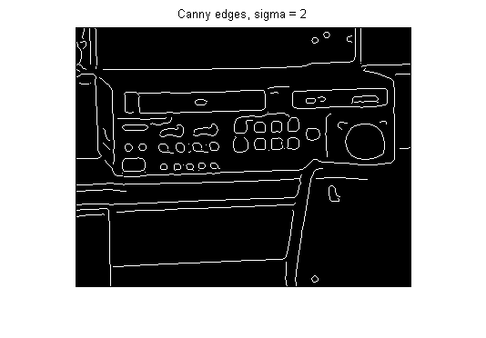
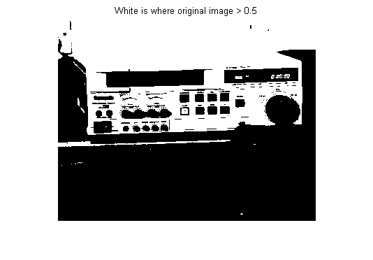
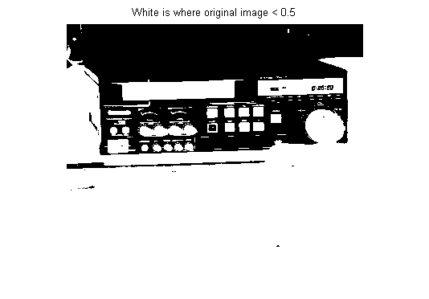
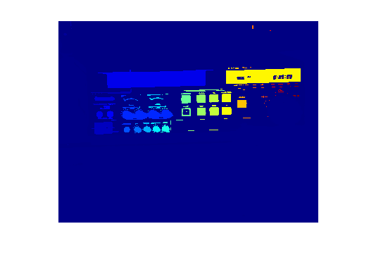
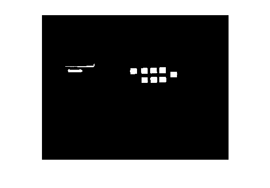

Demonstration of a selection of image processing operations
David Young
Contents
Setup
This assumes that the Sussex vision library is in your Matlab path.
Read in an image, and display it.
Image = teachimage('vcr.bmp');
imshow(Image);
 Edge detection
Experiment with the two kinds of edge detectors described in the lectures. We use the implementations from the Matlab Image Processing Toolbox, accessed via the edge function.
edges = edge(Image, 'log', [], 1); % Marr-type, sigma = 1 figure; imshow(edges); title('Marr edges, sigma = 1'); edges = edge(Image, 'log', [], 2); % Marr-type, sigma = 2 figure; imshow(edges); title('Marr edges, sigma = 2'); edges = edge(Image, 'canny', [], 1); % Canny, sigma = 1 figure; imshow(edges); title('Canny edges, sigma = 1'); edges = edge(Image, 'canny', [], 2); % Canny, sigma = 2 figure; imshow(edges); title('Canny edges, sigma = 2');   
Thresholding
Matlab provides a thresholding function, but the operation is most simply written (for ordinary arrays of type double) using the arithmetic "greater than" operator.
thresh = 0.5; bin = Image > thresh; % regions brighter than thresh figure; imshow(bin); title(['White is where original image > ' num2str(thresh)]); bin = Image < thresh; % regions darker than thresh figure; imshow(bin); title(['White is where original image < ' num2str(thresh)]); 
Finding connected regions
We use the toolbox function, with 8-connectivity.
labelled = bwlabel(bin, 8);
figure; imshow(labelled, []);
colormap(jet); % different regions different colours
 Finding the sizes of different regions
We find areas as an example, but lots of other statistics may be measured - see help for regionprops. The second line of code extracts the sizes from the structure array to an ordinary array. For more information, see the Matlab documentation on structure arrays.
The number of blobs is printed.
blobstructures = regionprops(labelled, 'Area');
blobsizes = [blobstructures.Area];
no_blobs = length(blobsizes)
no_blobs = 135
Finding blobs in a certain size range (100-200 pixels)
We can easily pick out the blobs in a size range of interest. find is a useful function that returns the indices of non-zero elements of an array. In this case, the indices returned are the same as the labels of the blobs in the size range.
We then select just the blobs with these labels, using ismember to test each pixel of the labelled array to see if it belongs to one of the blobs of interest.
minBlobSize = 100; maxBlobSize = 200; special_blobs = find(blobsizes >= minBlobSize & blobsizes <= maxBlobSize) some_blobs = ismember(labelled, special_blobs); imshow(some_blobs);
special_blobs =
Columns 1 through 7
7 11 64 70 71 75 76
Columns 8 through 10
82 83 92
 Experimenting
You can download this document and then extract the original M-file with Matlab's grabcode function. You can then edit it for experimentation. (Functions from the Sussex vision library are only available to Sussex students and staff.)
Copyright University of Sussex, 2006, 2008.